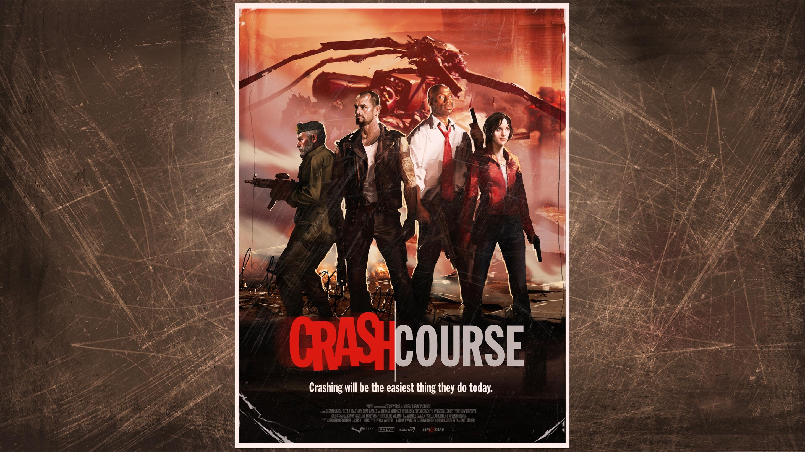
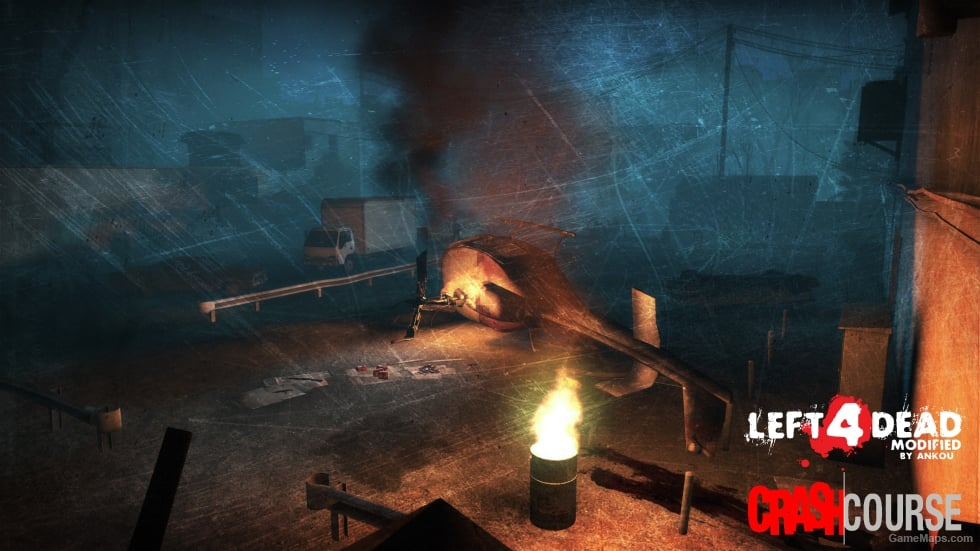

"Crash Course" es una campaña DLC (Contenido descargable) para Left 4 Dead. Esta campaña es un conector entre las campañas No Mercy y Death Toll. Los sobrevivientes originales: Bill, Zoe, Francis y Lewis deben cruzar por un entorno urbano y zonas industriales para encontrar una otra ruta de escape tras haber sobrevivido al accidente del helicóptero que los rescato del Hospital Mercy.

La campaña comienza poco después de No Mercy, cuando el helicóptero de los supervivientes se estrella tras el piloto ser infectado por la gripe verde. Los sobrevivientes comienzan su viaje en un callejón cercano al lugar donde se estrelló el helicóptero, rodeados de restos y escombros de este. Los supervivientes deben recorrer los estrechos callejones en busca de un camino que los lleve a la zona industrial mientras intentan sobrevivir de hordas de zombis e infecctados especiales.
En su camino por las calles, los sobrevivientes entran en una nave industrial. Esta sección de la campaña transcurre en un entorno más abierto a comparación de la mayoría de campañas.
Los sobrevivientes tiene que recorrer la mayoría de zonas importantes del Almacén como la zona de almacenamiento, el muelle de carga y la oficina central.
La última parte de la campaña sucede en un puente donde los sobrevivientes deben cruzar para escapar del área. Para bajar el puente se deben activar una serie de controles que genera fuertes ruidos alertando a una gran oleada de infectados, finalizando la campaña con los sobrevivientes escapando de la zona.
